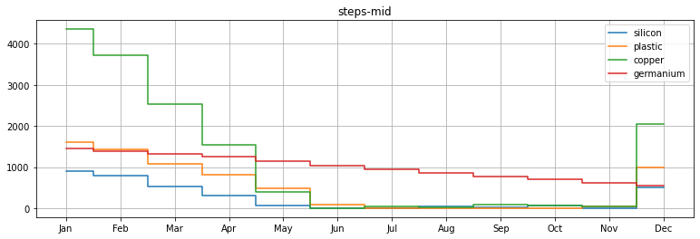
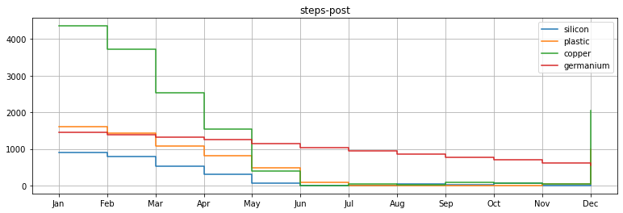
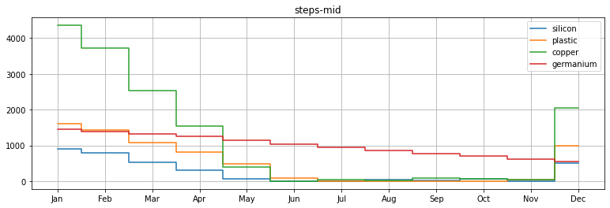
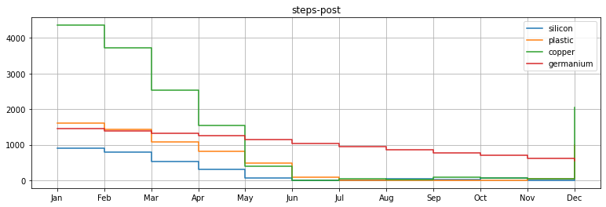

BIM Production
Contents
BIM Production¶
We consider Caroline’s material planning again, but now with more sophisticated pricing and acquisition protocols. There are now three suppliers. The suppliers can deliver the following materials:
A: silicon, germanium and plastic
B: copper
C: all of the above Copper should be acquired in multiples of 100 gram, since it is delivered in sheets of 100 gram. Unitary materials such as silicon, germanium and plastic may be acquired in any number, but the price is in batches of 100. Meaning that 30 units of silicon with 10 units of germanium and 50 units of plastic cost as much as 1 unit of silicon but half as much as 30 units of silicon with 30 units of germanium and 50 units of plastic. Furthermore, supplier C sells all materials and offers a discount if purchased together: 100 gram of copper and a batch of unitary material cost just 7. This set price is only applied to pairs, meaning that 100 gram of copper and 2 batches cost 13.
The prices are as follows in €:
Supplier |
Copper per sheet of 100 gram |
Batch of units |
Together |
|---|---|---|---|
A |
- |
5 |
- |
B |
3 |
- |
- |
C |
4 |
6 |
7 |
When stocking materials, the inventory costs are as follows per month:
Copper per 10 gram |
Silicon per unit |
Germanium per unit |
Plastic per unit |
|---|---|---|---|
0.1 |
0.02 |
0.02 |
0.02 |
The holding price of copper is per 10 gram and the copper stocked is rounded up to multiples of 10 grams, meaning that 12 grams pay for 20.
The capacity limitations of the warehouse allow for a maximum of 10 kilogram of copper in stock at any moment. There are no practical limitations to the number of units in stock.
As you recall, Caroline has the following stock at the moment:
Copper |
Silicon |
Germanium |
Plastic |
|---|---|---|---|
480 |
1000 |
1500 |
1750 |
Caroline would like to have at least the following stock at the end of the year:
Copper |
Silicon |
Germanium |
Plastic |
|---|---|---|---|
200 |
500 |
500 |
1000 |
Please help her to model the material planning and solve it with the data above. Note that Caroline aims at minimizing the acquisition and holding costs of the materials while meeting the required quantities for production. The production is made to order, meaning that no inventory of chips is kept.
import sys
if 'google.colab' in sys.modules:
import shutil
if not shutil.which('pyomo'):
!pip install -q pyomo
assert(shutil.which('pyomo'))
# cbc
!apt-get install -y -qq coinor-cbc
To be self contained… alternative is to upload and read a file.
demand_data = '''chip,Jan,Feb,Mar,Apr,May,Jun,Jul,Aug,Sep,Oct,Nov,Dec
Logic,88,125,260,217,238,286,248,238,265,293,259,244
Memory,47,62,81,65,95,118,86,89,82,82,84,66'''
from io import StringIO
import pandas as pd
demand_chips = pd.read_csv( StringIO(demand_data), index_col='chip' )
demand_chips
| Jan | Feb | Mar | Apr | May | Jun | Jul | Aug | Sep | Oct | Nov | Dec | |
|---|---|---|---|---|---|---|---|---|---|---|---|---|
| chip | ||||||||||||
| Logic | 88 | 125 | 260 | 217 | 238 | 286 | 248 | 238 | 265 | 293 | 259 | 244 |
| Memory | 47 | 62 | 81 | 65 | 95 | 118 | 86 | 89 | 82 | 82 | 84 | 66 |
use = dict()
use['Logic'] = { 'silicon' : 1, 'plastic' : 1, 'copper' : 4 }
use['Memory'] = { 'germanium' : 1, 'plastic' : 1, 'copper' : 2 }
use = pd.DataFrame.from_dict( use ).fillna(0).astype( int )
use
| Logic | Memory | |
|---|---|---|
| silicon | 1 | 0 |
| plastic | 1 | 1 |
| copper | 4 | 2 |
| germanium | 0 | 1 |
demand = use.dot( demand_chips )
demand
| Jan | Feb | Mar | Apr | May | Jun | Jul | Aug | Sep | Oct | Nov | Dec | |
|---|---|---|---|---|---|---|---|---|---|---|---|---|
| silicon | 88 | 125 | 260 | 217 | 238 | 286 | 248 | 238 | 265 | 293 | 259 | 244 |
| plastic | 135 | 187 | 341 | 282 | 333 | 404 | 334 | 327 | 347 | 375 | 343 | 310 |
| copper | 446 | 624 | 1202 | 998 | 1142 | 1380 | 1164 | 1130 | 1224 | 1336 | 1204 | 1108 |
| germanium | 47 | 62 | 81 | 65 | 95 | 118 | 86 | 89 | 82 | 82 | 84 | 66 |
DONE¶
the example has been changed to follow the BIM story
checked that it solves
TODO:¶
still need to describe the modeling choices.
still need to adjust the code to meet the style guide
import pyomo.environ as pyo
m = pyo.ConcreteModel("Francis' material planning")
m.periods = demand.keys()
m.materials = demand.index
m.existing = {'silicon' : 1000, 'germanium': 1500, 'plastic': 1750, 'copper' : 4800 }
m.desired = {'silicon' : 500, 'germanium': 500, 'plastic': 1000, 'copper' : 2000 }
m.suppliers = ['A','B','C']
m.supplyingPoles = [ 'B', 'C' ]
m.supplyingBatches = [ 'A', 'C' ]
m.givingDiscount = [ 'C' ]
# we express prices in cents to preserve integers
m.priceBatch = { 'A': 500, 'C': 600 }
m.pricePole = { 'B': 300, 'C': 400 }
m.discount = m.priceBatch['C']+m.pricePole['C']-700
m.batchSize = 100
m.unitaryHoldingCosts = { 'copper': 10, 'silicon' : 2, 'germanium': 2, 'plastic': 2 }
m.unitaryMaterials = [ 'silicon', 'germanium', 'plastic' ]
m.stock = pyo.Var( m.materials, m.periods, within=pyo.NonNegativeReals )
m.buy = pyo.Var( m.supplyingBatches, m.unitaryMaterials, m.periods, within=pyo.NonNegativeReals )
m.batches = pyo.Var( m.supplyingBatches, m.periods, within=pyo.NonNegativeIntegers )
m.poles = pyo.Var( m.supplyingPoles, m.periods, within=pyo.NonNegativeIntegers )
m.pairs = pyo.Var( m.periods, within=pyo.NonNegativeIntegers )
m.meters = pyo.Var( m.periods, within=pyo.NonNegativeIntegers )
m.obj = pyo.Objective( expr = sum( m.priceBatch[b] * m.batches[b,i] for b in m.supplyingBatches for i in m.periods ) \
+ sum( m.pricePole[p] * m.poles[p,i] for p in m.supplyingPoles for i in m.periods ) \
- sum( m.discount * m.pairs[i] for i in m.periods ) \
+ sum( m.unitaryHoldingCosts['copper'] * m.meters[i] for i in m.periods ) \
+ sum( m.unitaryHoldingCosts[j] * m.stock[j,i] for j in m.unitaryMaterials for i in m.periods ) \
, sense = pyo.minimize
)
def PairsInBatches( m, i ):
return m.pairs[i] <= m.batches['C',i]
def PairsInPoles( m, i ):
return m.pairs[i] <= m.poles['C',i]
m.pairsInBatches = pyo.Constraint( m.periods, rule = PairsInBatches )
m.pairsInPoles = pyo.Constraint( m.periods, rule = PairsInPoles )
def WoodStock( m, i ):
return m.stock['copper',i] <= 10*m.meters[i]
def WoodStockMax( m, i ):
return m.stock['copper',i] <= 10000
def InBatches( m, i, b ):
return sum( m.buy[b,j,i] for j in m.unitaryMaterials ) <= m.batchSize*m.batches[b,i]
m.woodStock = pyo.Constraint( m.periods, rule = WoodStock )
m.woodStockMax = pyo.Constraint( m.periods, rule = WoodStockMax )
m.inBatches = pyo.Constraint( m.periods, m.supplyingBatches, rule = InBatches )
m.constraints = pyo.ConstraintList() # Create a set of constraints
first = m.periods[0]
last = m.periods[-1]
for j in m.unitaryMaterials:
m.constraints.add( m.stock[j,first] == m.existing[j] + sum(m.buy[b,j,first] for b in m.supplyingBatches) - demand.loc[j,first] )
for prev,current in zip(m.periods,m.periods[1:]):
m.constraints.add( m.stock[j,current] == m.stock[j,prev] + sum(m.buy[b,j,current] for b in m.supplyingBatches) - demand.loc[j,current] )
m.constraints.add( m.stock[j,last] >= m.desired[j] )
m.constraints.add( m.stock['copper',first] == m.existing['copper'] + 100*sum(m.poles[p,first] for p in m.supplyingPoles) - demand.loc['copper',first] )
for prev,current in zip(m.periods,m.periods[1:]):
m.constraints.add( m.stock['copper',current] == m.stock['copper',prev] + 100*sum(m.poles[p,current] for p in m.supplyingPoles) - demand.loc['copper',current] )
m.constraints.add( m.stock['copper',last] >= m.desired['copper'] )
%time results = pyo.SolverFactory('gurobi_direct').solve(m)
CPU times: total: 93.8 ms
Wall time: 148 ms
results
{'Problem': [{'Name': '"Francis\' material planning"', 'Lower bound': 110216.00000000012, 'Upper bound': 110216.00000000012, 'Number of objectives': 1, 'Number of constraints': 124, 'Number of variables': 192, 'Number of binary variables': 0, 'Number of integer variables': 72, 'Number of continuous variables': 120, 'Number of nonzeros': 372, 'Sense': 1, 'Number of solutions': 7}], 'Solver': [{'Name': 'Gurobi 9.50', 'Status': 'ok', 'Wallclock time': 0.030946731567382812, 'Termination condition': 'optimal', 'Termination message': 'Model was solved to optimality (subject to tolerances), and an optimal solution is available.'}], 'Solution': [OrderedDict([('number of solutions', 0), ('number of solutions displayed', 0)])]}
if results.solver.termination_condition == 'optimal':
import numpy as np
np.set_printoptions(edgeitems=3,infstr='inf',linewidth=200, nanstr='nan', precision=15, suppress=False, threshold=1000, formatter=None)
value = m.obj.expr()
Batches = [ [ m.batches[b,i].value for i in m.periods ] for b in m.supplyingBatches ]
Poles = [ [ m.poles[b,i].value for i in m.periods ] for b in m.supplyingPoles ]
Pairs = [ m.pairs[i].value for i in m.periods ]
Buy = [ [ [ m.buy[s,j,i].value for i in m.periods ] for j in m.unitaryMaterials ] for s in m.supplyingBatches ]
Stock = [ [ m.stock[j,i].value for i in m.periods ] for j in m.materials ]
Meters = [ m.meters[i].value for i in m.periods ]
def months( before='', after='', length=5 ):
return ''.join( ['{:>{l}s}'.format(before,l=length)] + [ '{:>{l}s}'.format(j,l=length) for j in calendar.month_abbr[1:] + ['{:>{l}s}'.format(after,l=length)] ] )
def describe( list, decimals=0 ):
formattedList = [ '{:5.{prec}f}'.format( member + 0, prec=decimals ) for member in list]
return ''.join(formattedList)
print('')
print( 'Costs : ', np.around( value/100, 3 ) )
print('')
print( '{:>13s}'.format('periods') + ''.join( [ '{:>{l}s}'.format(p,l=5) for p in m.periods ] ) )
print( 'buy')
for s,supplier in enumerate(m.supplyingBatches):
print(supplier)
for i,j in enumerate(m.unitaryMaterials):
print('{:>13s}'.format(j) + describe( Buy[s][i] ) )
print( 'batches')
for s,supplier in enumerate(m.supplyingBatches):
print('{:>13s}'.format(supplier) + describe( Batches[s] ) )
print( 'poles' )
for s,supplier in enumerate(m.supplyingPoles):
print('{:>13s}'.format(supplier) + describe( Poles[s] ) )
print( '' )
print('{:>13s}'.format('pairs from C') + describe( Pairs ) )
print( '' )
import calendar
print( 'stock')
print( '{:>12s}'.format('material') + months( before='from', after='to') )
for i,j in enumerate(m.materials):
print( '{:>12s}'.format(j) + describe( [m.existing[j]] + Stock[i] + [m.desired[j]] ) )
print( '' )
print('{:>17s}'.format('full copper meters') + describe( Meters ) )
Costs : 1102.16
periods Jan Feb Mar Apr May Jun Jul Aug Sep Oct Nov Dec
buy
A
silicon 0 0 0 0 0 0 0 0 0 0 0 0
germanium 0 0 0 0 0 0 0 0 0 0 0 0
plastic 0 0 0 0 0 0 0 0 0 0 0 0
C
silicon 0 0 0 0 0 214 248 274 253 325 203 744
germanium 0 0 0 0 0 0 0 0 0 0 0 0
plastic 0 0 0 0 0 15 252 326 347 375 397 1256
batches
A 0 0 0 0 0 0 0 0 0 0 0 0
C 0 0 0 0 0 3 5 6 6 7 6 20
poles
B 0 0 0 0 0 7 7 5 7 6 6 11
C 0 0 0 0 0 3 5 6 6 7 6 20
pairs from C 0 0 0 0 0 3 5 6 6 7 6 20
stock
material from Jan Feb Mar Apr May Jun Jul Aug Sep Oct Nov Dec to
silicon 1000 912 787 527 310 72 0 0 36 24 56 0 500 500
plastic 1750 1615 1428 1087 805 472 83 1 0 0 0 54 1000 1000
copper 4800 4354 3730 2528 1530 388 8 44 14 90 54 50 2042 2000
germanium 1500 1453 1391 1310 1245 1150 1032 946 857 775 693 609 543 500
full copper meters 436 373 253 153 39 1 5 2 9 6 5 205
Tabular variables are ideal for dataframes¶
def ShowTriple( X, I,J,K, names ):
index = pd.MultiIndex.from_product([I,J], names=names)
return pd.DataFrame.from_records( [ [ X[i,j,k].value for k in K ] for i in I for j in J ],index=index,columns=K )
def ShowDouble( X, I,J ):
return pd.DataFrame.from_records( [ [ X[i,j].value for j in J ] for i in I ], index=I, columns=J )
def ShowSingle( X, I ):
return pd.DataFrame( [ X[i].value for i in I ], index=I ).T
ShowTriple( m.buy, m.supplyingBatches, m.unitaryMaterials, m.periods, ['supplier','materials'] ).astype(int)
| Jan | Feb | Mar | Apr | May | Jun | Jul | Aug | Sep | Oct | Nov | Dec | ||
|---|---|---|---|---|---|---|---|---|---|---|---|---|---|
| supplier | materials | ||||||||||||
| A | silicon | 0 | 0 | 0 | 0 | 0 | 0 | 0 | 0 | 0 | 0 | 0 | 0 |
| germanium | 0 | 0 | 0 | 0 | 0 | 0 | 0 | 0 | 0 | 0 | 0 | 0 | |
| plastic | 0 | 0 | 0 | 0 | 0 | 0 | 0 | 0 | 0 | 0 | 0 | 0 | |
| C | silicon | 0 | 0 | 0 | 0 | 0 | 213 | 248 | 273 | 253 | 325 | 203 | 744 |
| germanium | 0 | 0 | 0 | 0 | 0 | 0 | 0 | 0 | 0 | 0 | 0 | 0 | |
| plastic | 0 | 0 | 0 | 0 | 0 | 15 | 251 | 326 | 347 | 375 | 396 | 1256 |
ShowDouble( m.stock, m.materials, m.periods ).astype(int)
| Jan | Feb | Mar | Apr | May | Jun | Jul | Aug | Sep | Oct | Nov | Dec | |
|---|---|---|---|---|---|---|---|---|---|---|---|---|
| silicon | 912 | 787 | 527 | 310 | 72 | 0 | 0 | 35 | 23 | 55 | 0 | 500 |
| plastic | 1615 | 1428 | 1087 | 805 | 472 | 83 | 0 | 0 | 0 | 0 | 53 | 999 |
| copper | 4354 | 3730 | 2528 | 1530 | 388 | 8 | 44 | 14 | 90 | 54 | 50 | 2042 |
| germanium | 1453 | 1391 | 1310 | 1245 | 1150 | 1032 | 946 | 857 | 775 | 693 | 609 | 543 |
ShowDouble( m.batches, m.supplyingBatches, m.periods ).astype(int)
| Jan | Feb | Mar | Apr | May | Jun | Jul | Aug | Sep | Oct | Nov | Dec | |
|---|---|---|---|---|---|---|---|---|---|---|---|---|
| A | 0 | 0 | 0 | 0 | 0 | 0 | 0 | 0 | 0 | 0 | 0 | 0 |
| C | 0 | 0 | 0 | 0 | 0 | 3 | 5 | 6 | 6 | 7 | 6 | 20 |
ShowDouble( m.poles, m.supplyingPoles, m.periods ).astype(int)
| Jan | Feb | Mar | Apr | May | Jun | Jul | Aug | Sep | Oct | Nov | Dec | |
|---|---|---|---|---|---|---|---|---|---|---|---|---|
| B | 0 | 0 | 0 | 0 | 0 | 7 | 7 | 5 | 7 | 6 | 6 | 11 |
| C | 0 | 0 | 0 | 0 | 0 | 3 | 5 | 6 | 6 | 7 | 6 | 20 |
ShowSingle( m.pairs, m.periods ).astype(int)
| Jan | Feb | Mar | Apr | May | Jun | Jul | Aug | Sep | Oct | Nov | Dec | |
|---|---|---|---|---|---|---|---|---|---|---|---|---|
| 0 | 0 | 0 | 0 | 0 | 0 | 3 | 5 | 6 | 6 | 7 | 6 | 20 |
ShowSingle( m.meters, m.periods ).astype(int)
| Jan | Feb | Mar | Apr | May | Jun | Jul | Aug | Sep | Oct | Nov | Dec | |
|---|---|---|---|---|---|---|---|---|---|---|---|---|
| 0 | 436 | 373 | 253 | 153 | 39 | 1 | 5 | 2 | 9 | 6 | 5 | 205 |
Dataframes come with a wealth of ready made graphics¶
stock = ShowDouble( m.stock, m.materials, m.periods ).astype(int).T
%matplotlib inline
import matplotlib.pyplot as plt
steps = ['pre','mid','post']
for s in steps:
step = 'steps-'+s
ax = stock.plot(drawstyle=step,grid=True, figsize=(13,4), title=step)
ax.set_xticks(range(len(stock.index)))
ax.set_xticklabels(stock.index)
plt.show()
 



ax = stock.plot(drawstyle='steps-'+steps[0],figsize=(13,4), title='per month')
ax.set_xticks(range(len(stock.index)))
ax.set_xticklabels(stock.index)
for s in steps[-1:]:
step = 'steps-'+s
stock.plot(ax=ax,drawstyle=step, ls=':')
plt.legend(ncol=2,handleheight=2.4, labelspacing=0.05)
plt.show()